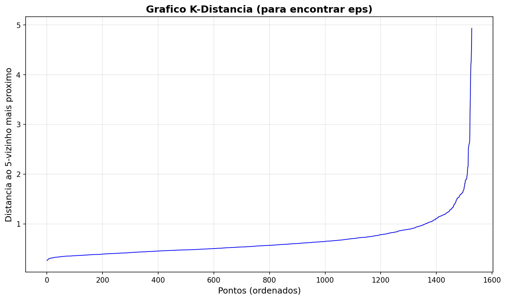

Parametros usados: eps=1.5, min_samples=5
Resultado: 1 cluster principal com 1505 pontos (98.5%)
Observacao: DBSCAN identificou 1 cluster dominante porque os dados tem densidades similares e poucos outliers (23 pontos classificados como ruido)
